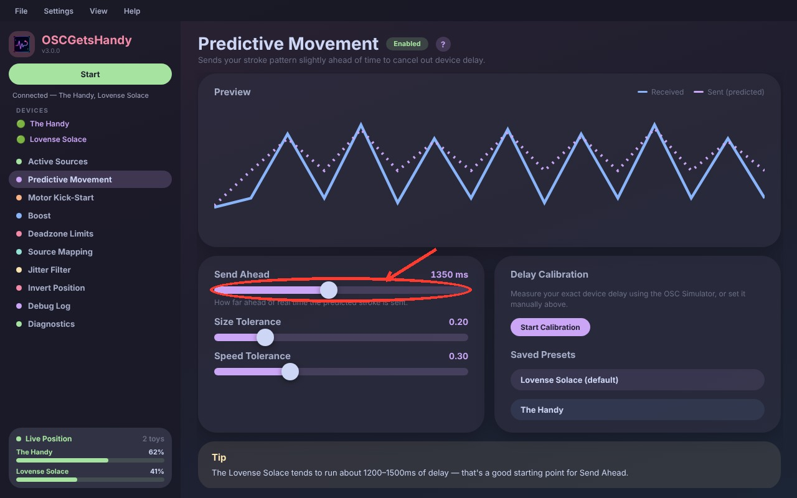
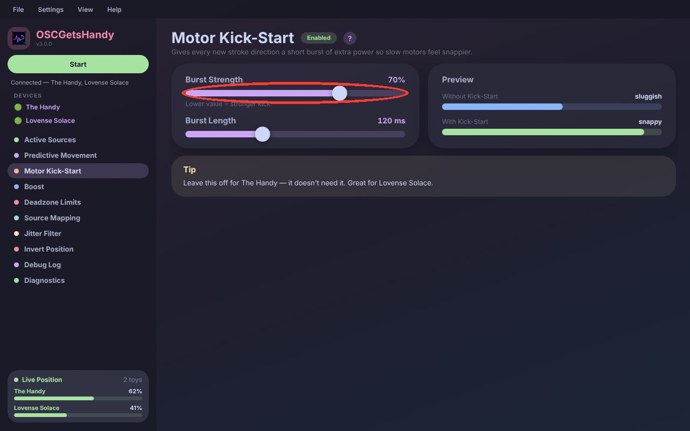
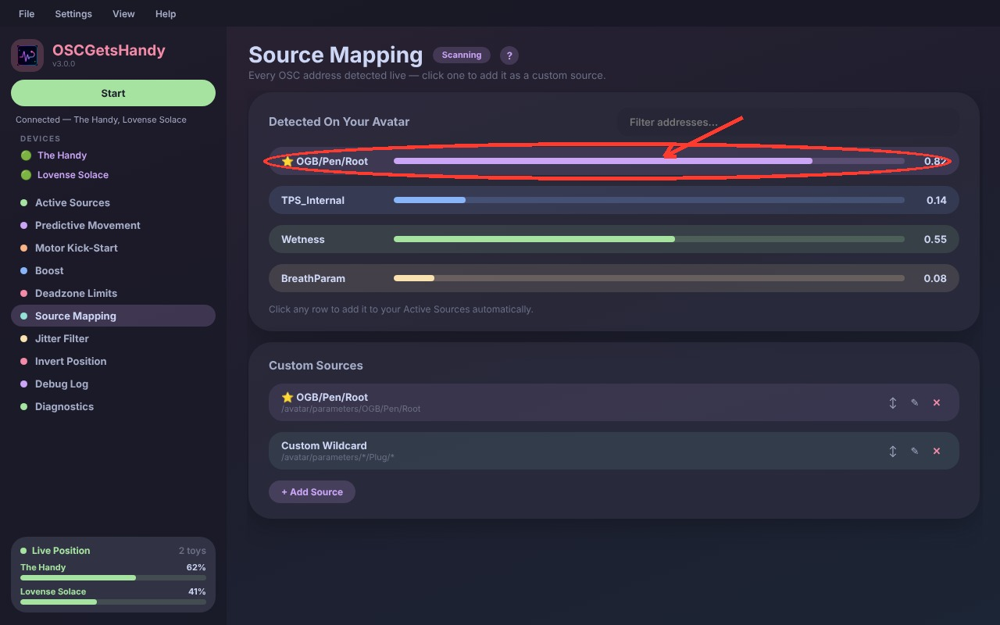
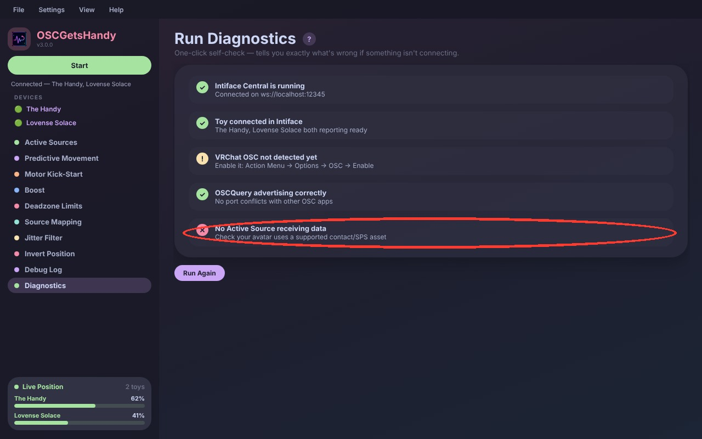
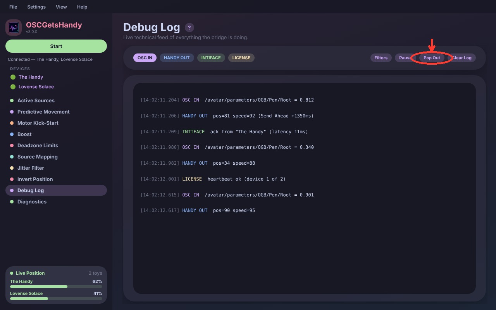
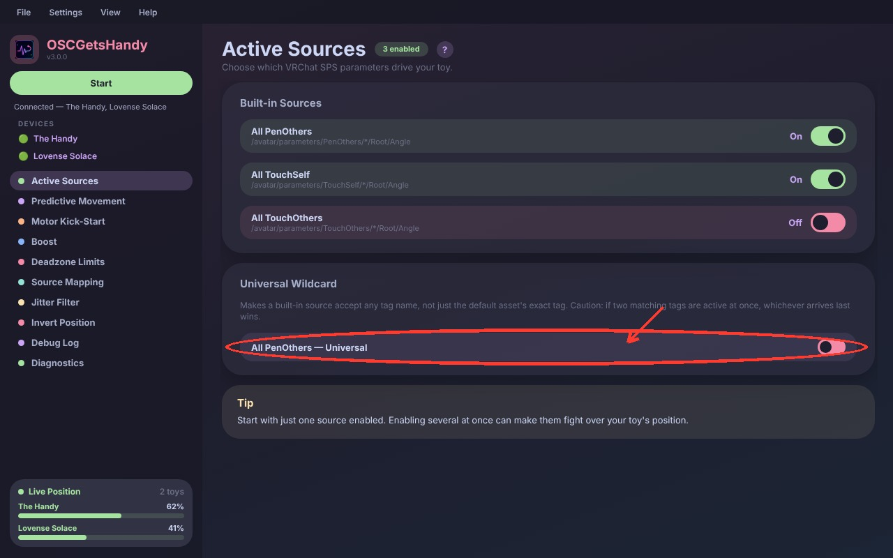

VRChat → Real Life
Make your toys move with VRChat
OSCGetsHandy bridges VRChat's SPS parameters straight to The Handy, Lovense, and any Buttplug-compatible toy — real-time, low-latency, and built for reliability.
OSCGetsHandy bridges VRChat's SPS parameters straight to The Handy, Lovense, and any Buttplug-compatible toy — real-time, low-latency, and built for reliability.

Learns your stroke pattern from the first couple of strokes, then sends it ahead of time so devices with real hardware delay — like the Lovense Solace — feel like they're moving in perfect sync.
Two tolerance sliders control how fast the prediction adapts when your movement pattern changes, and a built-in Calibration tool measures your exact device delay for you.
Read the full guide →Forces a short, strong burst right after every direction change, so toys with slower motor acceleration respond instantly instead of feeling sluggish.
Burst Strength and Burst Length are both adjustable so you can dial in exactly how aggressive the kick feels.
Read the full guide →
No more digging through the Debug Log by hand. This page lists off every OSC address it detects live on your avatar — just click one and it's added to your Active Sources automatically.
Add exact addresses or wildcard patterns for avatars with non-standard tag names, and reorder, rename, or remove custom sources anytime.
Read the full guide →
One click runs a full self-check — Intiface connection, device status, VRChat OSC, port conflicts, and active sources — and tells you in plain English exactly what's wrong.
Read the full guide →
A live, color-coded technical feed of everything the bridge is doing — incoming OSC, outgoing toy commands, Intiface acknowledgements, and license heartbeats.
Filter by category, pause it to copy text without scroll interference, or pop it out into its own window.
Read the full guide →
Toggle the built-in PenOthers, TouchSelf and TouchOthers sources on or off, and turn on Universal Wildcard to make a source accept any matching tag name — not just the default asset's exact one.
Read the full guide →
Stretches your current motion range outward, so even small movements produce full-range toy response.
Read the guide →Hard-limits how far the toy is ever allowed to move, no matter what the source sends.
Read the guide →Ignores tiny movements caused by connection noise so the toy doesn't twitch on every packet.
Read the guide →Flips the position output for devices that are physically mounted or held upside down.
Read the guide →Advertises itself over OSCQuery so VRChat finds it automatically — no manual ports, no conflicts with apps like VRCFT.
Read the guide →Measures your exact device's real-world delay using the OSC Simulator, for use with Predictive Movement.
Read the guide →Run The Handy and a Lovense device (or more) at the same time, each with its own settings and its own live position bar.
Per-device setting that snaps movement cleanly to the very top and bottom of your range.
A guided walkthrough with a sound-based source test — tap along to three chimes and OSCGetsHandy finds your source for you.
Save Predictive Movement presets per device, so switching toys doesn't mean re-tuning from scratch.
A completely rebuilt, bubblier interface with a collapsible sidebar — shown throughout this page is the real in-progress design.
Hide the features and sources you don't use from the menu, and bring them back anytime.
Download OSCGetsHandy, run it, and enter the license key emailed to you at purchase.
Open Intiface Central, turn on your device, and let it connect. OSCGetsHandy finds it automatically.
Action Menu → Options → OSC → Enable. That's it — your toy now follows your avatar in real time.
One-time purchase. Lifetime updates.